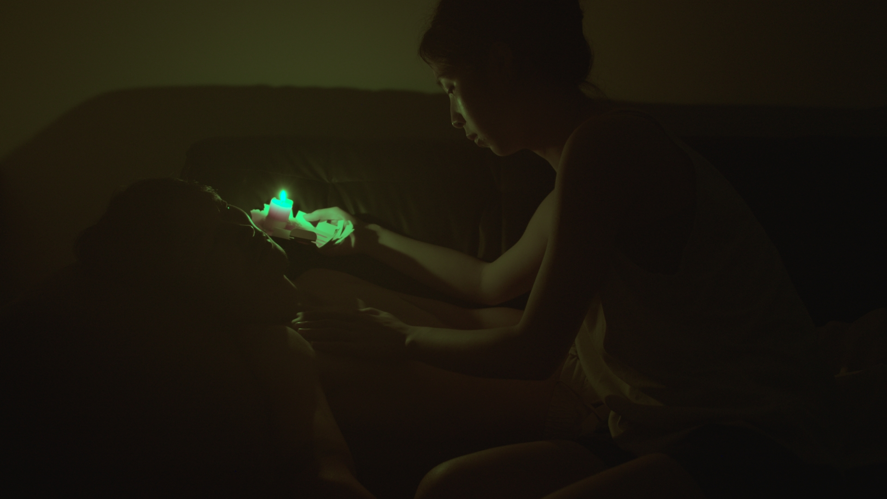

Works

Moduli (美都里)

LiuLi (琉璃舞女)

The 300 Blows (三百击)

No Where (无法入睡)
Wenyu Zhang (TUDONI) (b. 1995, Chengdu) is an independent film director and former actor. Moving across multiple artistic forms, he arrived at cinema as a way to observe and articulate the essence of human emotion.
张文瑜（TUDONI），1995年出生于成都。曾为演员，现为独立电影导演。穿行于不同艺术形式之后，他将电影视为观察与抵达人类情感本质的方式。